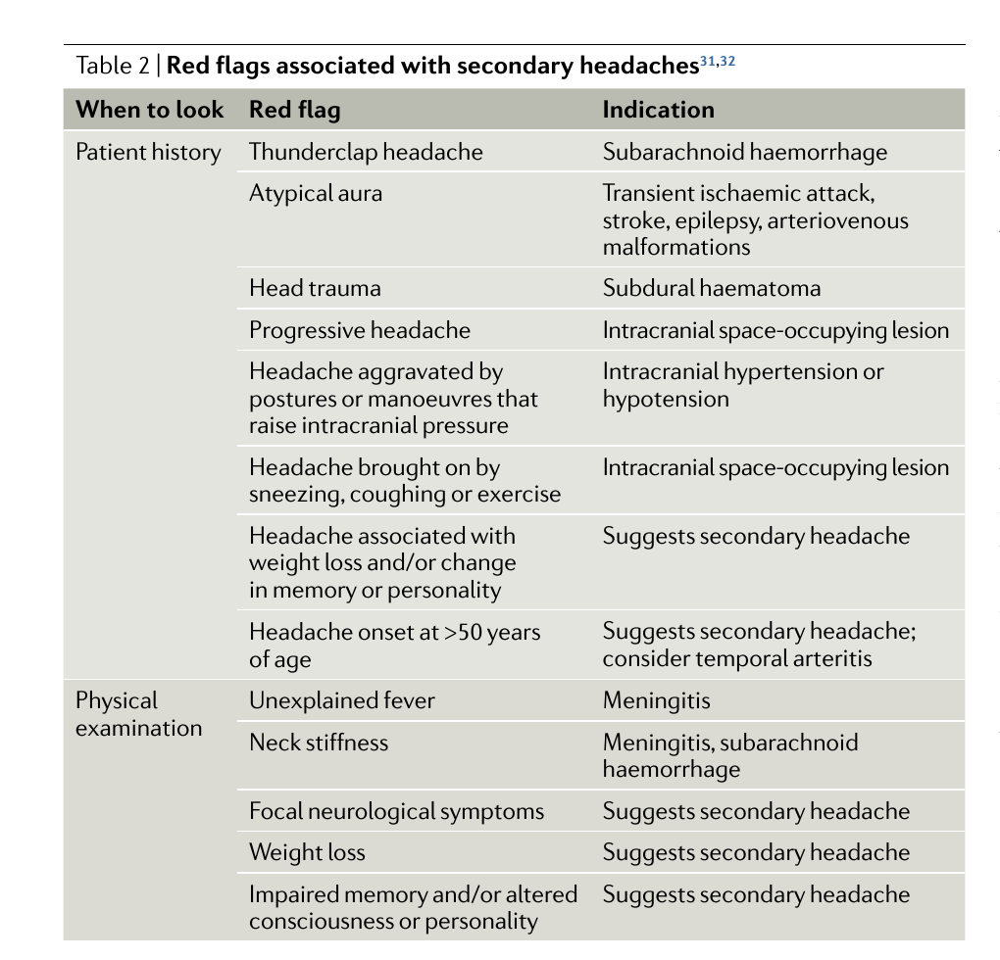

Página 1 · E1
A cefaleia que não se pode errar
“Essa dor de cabeça manda pra casa com analgésico — ou é a que não se pode errar?”
Prevalência e prova
Cefaleia é tema de alta prevalência e incidência no consultório e no pronto-socorro: o atendimento a paciente com dor de cabeça é constante. Também é tema recorrente e importante em prova de residência. Em relação a enxaqueca, cefaleia tensional e meningite, o conteúdo de base costuma ser familiar — a maioria das questões não é difícil; de vez em quando surge a capciosa. Enxaqueca é uma das que mais caem, mas o primeiro dever clínico é reconhecer alarmes e separar cefaleia primária de secundária antes de aprofundar o diagnóstico específico.
Dilema grave × simples
O primeiro passo não precisa partir de um caso fechado: é preciso organizar o raciocínio sindrômico. O dilema central: a dor acontece porque há doença grave (ex.: tumor, hemorragia subaracnoide) — ou o problema é simples o bastante para analgésico, alta e seguimento sem exame complementar?
Por que sindrômico antes do “nome”
Na avaliação inicial da cefaleia, a pergunta-mãe é: problema grave que não se pode errar o diagnóstico × problema simples que nem exame complementar exige. A triagem (grave vs simples; primária vs secundária; presença de alarme) antecede o nome da cefaleia primária e a catalogação completa das secundárias.
Funil-semente
Funil clínico: alarme? → pensar em secundária e investigar · sem alarme + padrão de primária → conduzir pelo eixo clínico. Essa bifurcação organiza todo o raciocínio inicial.

Quiz — fixação
-
Qual é a pergunta-mãe na porta da cefaleia?
Gabarito B. a porta não começa no catálogo de primárias nem na farmacologia — começa no risco de errar o diagnóstico grave versus a simplicidade que dispensa complementar.
(A) conduta de enxaqueca é downstream, não a abertura da triagem. (C) exame de imagem depende da suspeita, não é o primeiro gesto mental. (D) aura ajuda a nomear uma primária depois — não resolve o dilema grave×simples. Cai em (A) quem estuda “enxaqueca primeiro” e puxa a resposta de tratamento; em (C) por ansiedade de “pedir exame”; em (D) por confundir semiologia de primária com triagem de gravidade.
-
Por que a abordagem sindrômica antecede o “nome” da cefaleia?
Gabarito B. a abordagem sindrômica ordena o raciocínio: primeiro se há alarme e se a dor é a doença ou a denúncia — depois se aprofunda a entidade.
(A) falso: sem alarme e com padrão de primária o eixo é clínico, não “sempre secundária”. (C) enxaqueca cai bastante; só não é a prioridade do raciocínio inicial. (D) na primária o exame é normal na maioria absoluta. Cai em (A) por transformar hiperalarme em dogma; em (C) por confundir “não é a prioridade inicial” com “não cai”; em (D) por misturar com exame de secundária.